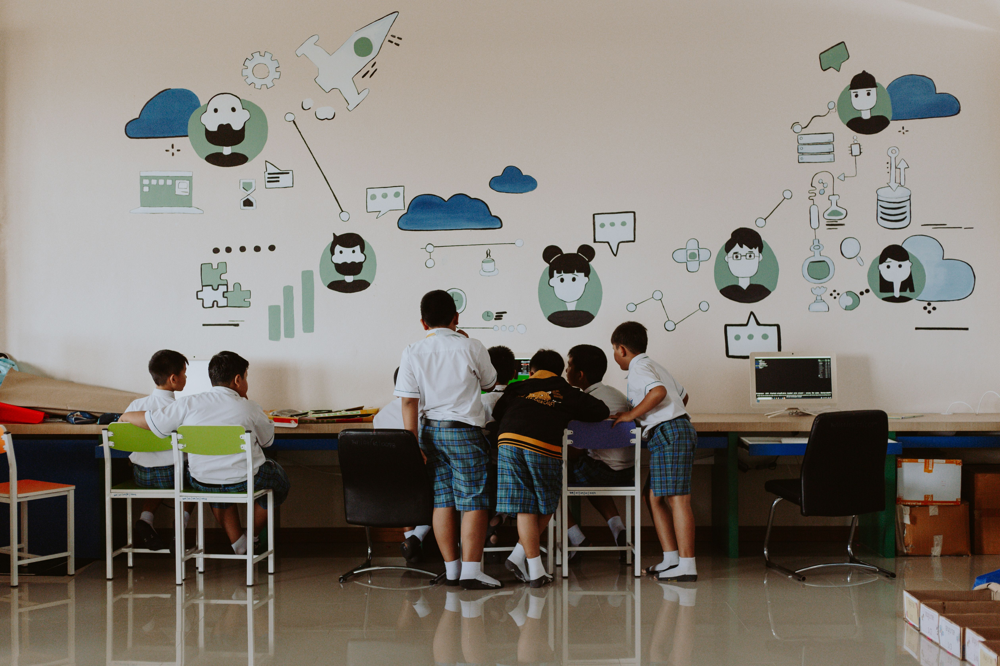
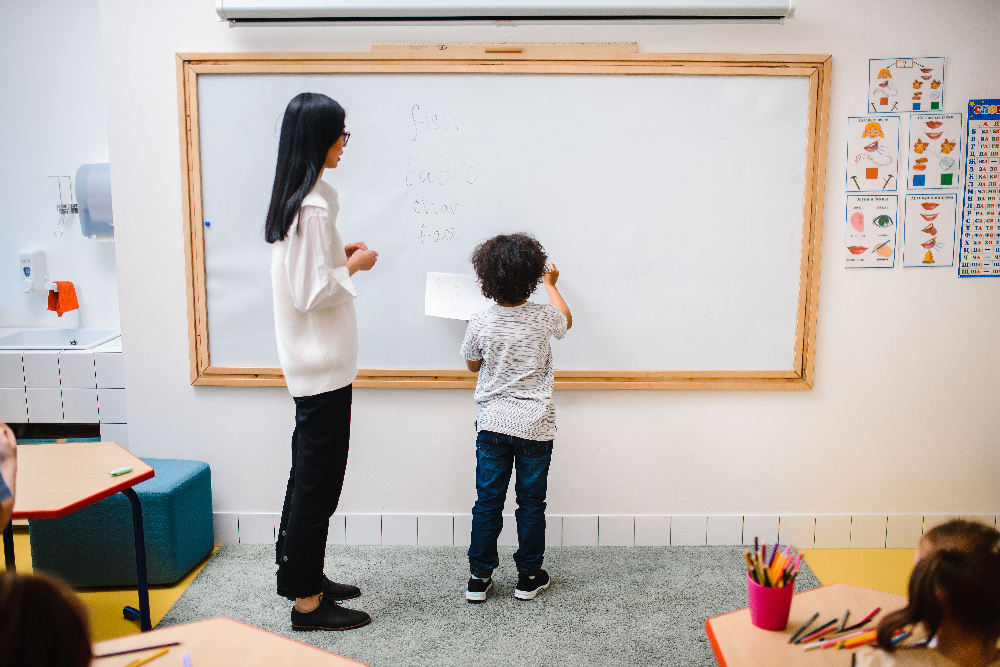
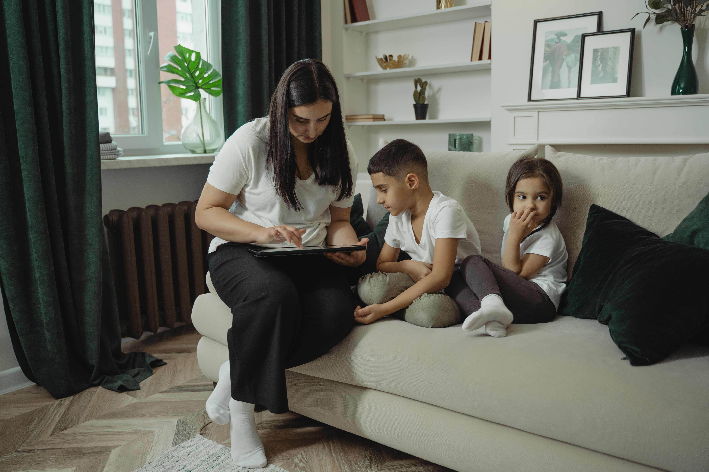

Un ecosistema integral para potenciar el seguimiento individualizado de cada alumno en nivel inicial con herramientas digitales de evaluación, tareas adaptadas y reportes colaborativos.

Conectamos a los agentes claves del desarrollo infantil para un acompañamiento coordinado, transparente y efectivo.
Gestiona tu aula, consulta fichas con fotos y diagnósticos, y asigna consignas generales o particulares para cada estudiante.
Acceder al Portal DocenteRegistra informes con imágenes y sliders de progreso, comparte sugerencias de estimulación y realiza análisis visual de evolución.
Ir a Panel de SeguimientoAcompaña el progreso de tus hijos en casa con actividades sugeridas, comunicación fluida con la sala y visualización clara de logros.
Ver Recursos & GuíasCada reporte y actividad generada se almacena directamente en la base de datos centralizada, actualizando las métricas y gráficos al instante para todos los miembros del equipo.
Profesionales de la educación y salud trabajando de manera coordinada.
Especialista en didáctica inclusiva, dinámicas de aula y articulación con familias.

Enfoque en motricidad fina, integración sensorial y autonomía funcional escolar.

Coordinación de talleres familiares y continuidad de rutinas pedagógicas en el hogar.